# devtools::install_github("derekmichaelwright/agData")
library(agData) # Loads: tidyverse, ggpubr, ggbeeswarm, ggrepel
library(gganimate)# Prep data
colors <- c("darkgreen", "darkred", "darkgoldenrod2")
areas <- c("World",
levels(agData_FAO_Country_Table$Region),
levels(agData_FAO_Country_Table$SubRegion),
levels(agData_FAO_Country_Table$Country))
xx <- agData_FAO_Crops %>%
filter(Crop == "Lentils") %>%
mutate(Value = ifelse(Measurement %in% c("Area harvested","Production"),
Value / 1000000, Value),
Unit = plyr::mapvalues(Unit, c("hectares","tonnes"),
c("Million hectares","Million tonnes")))
areas <- areas[areas %in% xx$Area]
# Plot
pdf("lentil_fao.pdf", width = 12, height = 4)
for(i in areas) {
print(ggplot(xx %>% filter(Area == i)) +
geom_line(aes(x = Year, y = Value, color = Measurement),
size = 1.5, alpha = 0.8) +
facet_wrap(. ~ Measurement + Unit, ncol = 3, scales = "free_y") +
theme_agData(legend.position = "none",
axis.text.x = element_text(angle = 45, hjust = 1)) +
scale_color_manual(values = colors) +
scale_x_continuous(breaks = seq(1960, 2020, by = 5) ) +
labs(title = i, y = NULL, x = NULL,
caption = "\xa9 www.dblogr.com/ | Data: FAOSTAT") )
}
dev.off()## png
## 2# Prep data
areas <- c("Canada", "Southern Asia", "USA", "Turkey", "Europe", "Africa", "Oceania")
colors <- c("darkgreen", "darkgoldenrod2", "darkblue", "darkslategrey",
"antiquewhite4", "darkred", "darkorchid1")
xx <- agData_FAO_Crops %>%
filter(Area %in% areas, Crop == "Lentils", Measurement == "Production") %>%
mutate(Area = factor(Area, levels = areas) )
# Plot
mp <- ggplot(xx, aes(x = Year, y = Value / 1000000, color = Area)) +
geom_line(size = 1.5, alpha = 0.8) +
scale_color_manual(name = NULL, values = colors) +
scale_x_continuous(breaks = seq(1960, 2020, 5), minor_breaks = NULL) +
coord_cartesian(xlim = c(min(xx$Year)+1, max(xx$Year)-2)) +
theme_agData(legend.position = "bottom") +
guides(color = guide_legend(nrow = 1)) +
labs(title = "Lentil Production", y = "Million Tonnes", x = NULL,
caption = "\xa9 www.dblogr.com/ | Data: FAOSTAT")
ggsave("lentil_01.png", width = 7, height = 4)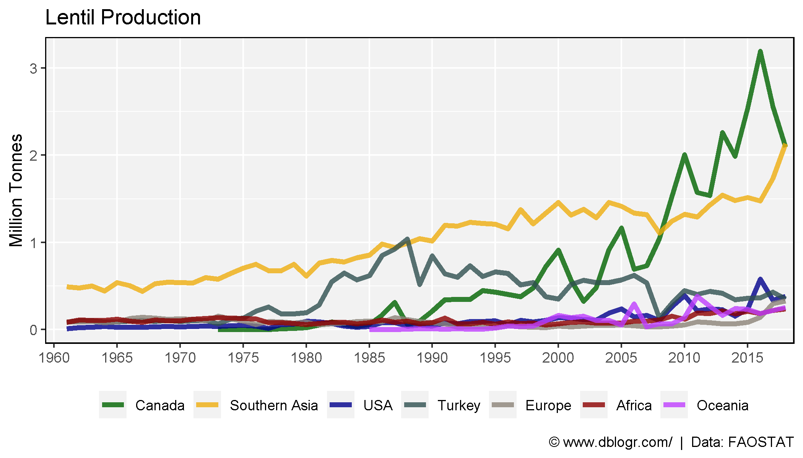
# Prep data
colors <- c("darkgreen", "darkblue", "darkgoldenrod2", "darkslategrey")
xx <- agData_FAO_Crops %>% region_Info() %>%
filter(Area %in% agData_FAO_Country_Table$Country,
Year == max(Year), Crop == "Lentils", Measurement == "Production") %>%
arrange(desc(Value)) %>%
slice(1:10) %>%
mutate(Area = factor(Area, levels = Area) )
# Plot
mp <- ggplot(xx, aes(x = Area, y = Value / 1000000, fill = Region)) +
geom_bar(stat = "identity", color = "black", alpha = 0.8) +
scale_fill_manual(values = colors) +
theme_agData(axis.text.x = element_text(angle = 45, hjust = 1)) +
labs(title = paste("Top Lentil Producers for", max(xx$Year)),
y = "Million Tonnes", x = NULL,
caption = "\xa9 www.dblogr.com/ | Data: FAOSTAT")
ggsave("lentil_02.png", mp, width = 6, height = 4)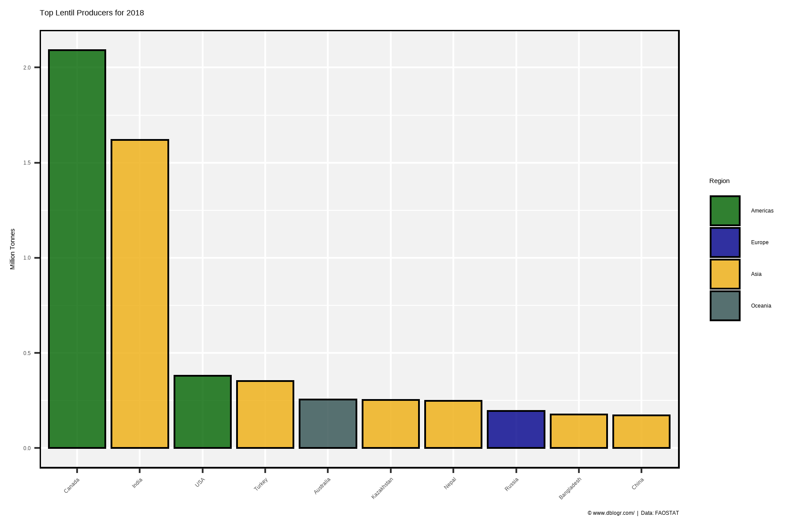
# Prep data
colors <- c("darkgreen", "darkblue", "darkred", "darkgoldenrod2", "darkslategrey")
areas <- agData_FAO_Crops %>% region_Info() %>%
filter(Area %in% agData_FAO_Country_Table$Country,
Year == max(Year), Crop == "Lentils", Measurement == "Production") %>%
arrange(desc(Value)) %>%
slice(1:10) %>%
pull(Area)
xx <- agData_FAO_Crops %>% region_Info() %>%
filter(Area %in% agData_FAO_Country_Table$Country,
Crop == "Lentils", Measurement == "Production") %>%
arrange(desc(Value)) %>%
mutate(Area = factor(Area, levels = unique(.$Area)) )
# Plot
mp <- ggplot(xx, aes(x = Area, y = Value / 1000000, fill = Region)) +
geom_bar(stat = "identity", color = "black") +
geom_text(aes(label = Year), x = 35, y = 3, size = 3) +
scale_fill_manual(values = colors) +
theme_agData(axis.text.x = element_text(angle = 45, hjust = 1)) +
labs(title = "Top Lentil Producers", y = "Million Tonnes", x = NULL,
caption = "\xa9 www.dblogr.com/ | Data: FAOSTAT") +
# gganimate
transition_states(Year)
mp <- animate(mp, end_pause = 20, width = 600, height = 400)
anim_save("lentil_gifs_01.gif", mp)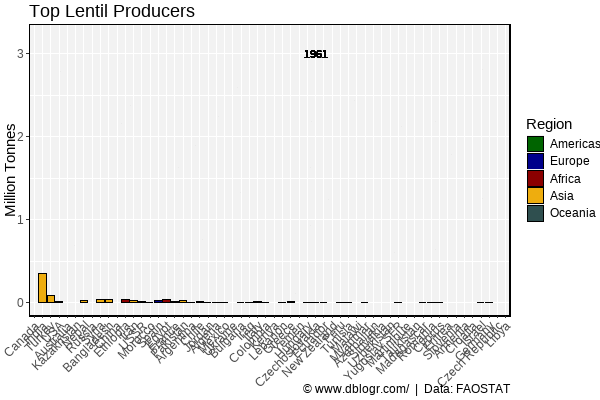
# Prep data
colors <- c("darkgreen", "darkblue", "darkred", "antiquewhite4",
"darkgoldenrod2", "darkslategrey")
x1 <- agData_FAO_Crops %>%
filter(Crop == "Lentils", Measurement == "Area harvested", Year == max(Year),
Area %in% agData_FAO_Country_Table$Country) %>%
top_n(10, Value)
xx <- agData_FAO_Crops %>%
filter(Crop == "Lentils", Measurement == "Yield",
Year > max(Year)-5, Area %in% x1$Area) %>%
group_by(Area) %>%
summarise(Value = mean(Value)) %>%
region_Info() %>%
arrange(desc(Value)) %>%
mutate(Area = factor(Area, levels = Area))
# Plot
mp <- ggplot(xx, aes(x = Area, y = Value, fill = SubRegion)) +
geom_bar(stat = "identity", color = "black") +
scale_fill_manual(name = NULL, values = colors) +
theme_agData(legend.position = "bottom",
axis.text.x = element_text(angle = 45, hjust = 1)) +
labs(title = "Lentil Yields - 5 year average",
y = "Tonnes / Hectare", x = NULL,
caption = "\xa9 www.dblogr.com/ | Data: FAOSTAT")
ggsave("lentil_03.png", mp, width = 6, height = 4)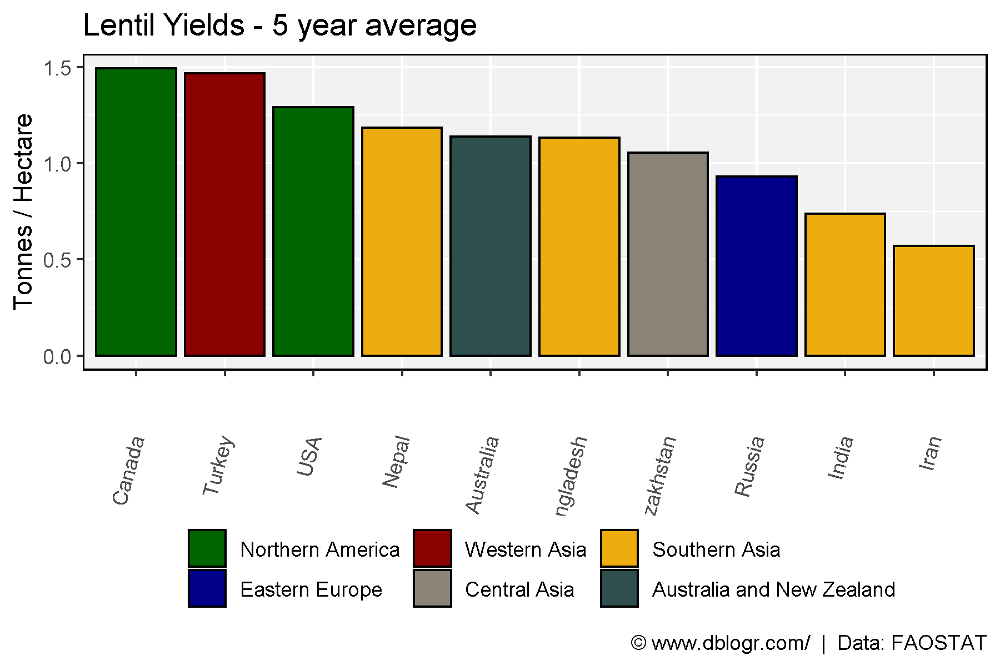
# Prep data
areas <- c("Canada", "India", "Ethiopia", "Turkey")
colors <- c("darkgreen", "darkgoldenrod2", "darkred", "darkslategrey")
xx <- agData_FAO_Crops %>%
filter(Crop == "Lentils", Area %in% areas, Measurement == "Yield") %>%
mutate(Area = factor(Area, levels = areas))
# Plot
mp <- ggplot(xx, aes(x = Year, y = Value, color = Area)) +
geom_line(alpha = 0.2) +
geom_smooth(method = "loess", size = 1.5, se = F) +
scale_x_continuous(breaks = seq(1960, 2020, by = 5), minor_breaks = NULL) +
coord_cartesian(xlim = c(min(xx$Year)+1, max(xx$Year)-2)) +
scale_color_manual(name = NULL, values = colors) +
theme_agData(legend.position = "bottom") +
labs(title = "Lentil Yields", y = "Tonnes / Hectare", x = NULL,
caption = "\xa9 www.dblogr.com/ | Data: FAOSTAT")
ggsave("lentil_04.png", mp, width = 6, height = 4)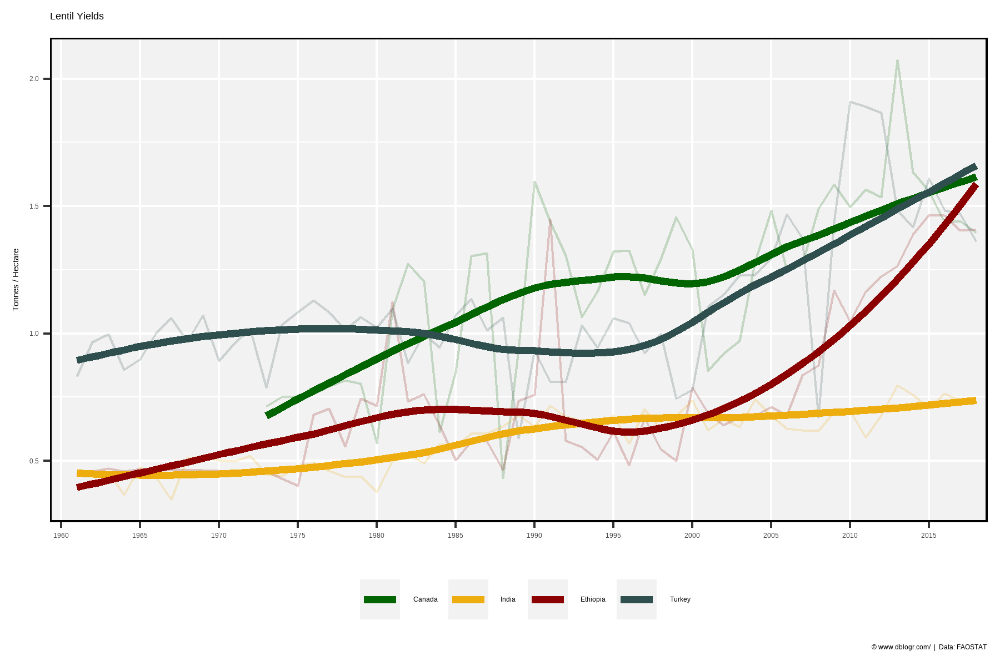
# Prep data
areas <- c("World", "Canada", "India", "Nepal", "Bangladesh")
colors <- c("black", "darkgreen", "darkgoldenrod2", "darkred", "darkslategrey")
xx <- agData_FAO_Crops %>%
filter(Crop == "Lentils", Area %in% areas, Measurement == "Yield") %>%
mutate(Area = factor(Area, levels = areas))
# Plot
mp <- ggplot(xx, aes(x = Year, y = Value, color = Area)) +
geom_line(alpha = 0.2) +
geom_smooth(method = "loess", size = 1.5, se = F) +
scale_x_continuous(breaks = seq(1960, 2020, by = 5), minor_breaks = NULL) +
coord_cartesian(xlim = c(min(xx$Year)+1, max(xx$Year)-2)) +
scale_color_manual(name = NULL, values = colors) +
theme_agData(legend.position = "bottom") +
labs(title = "Lentil Yields", y = "Tonnes / Hectare", x = NULL,
caption = "\xa9 www.dblogr.com/ | Data: FAOSTAT")
ggsave("lentil_05.png", mp, width = 6, height = 4)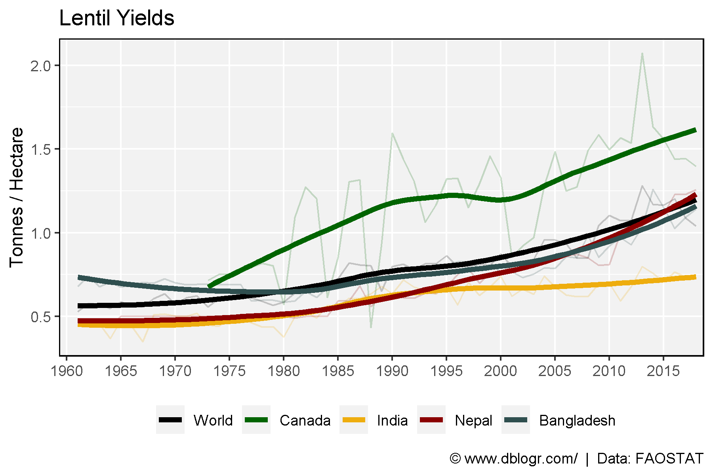
# Prep data
xx <- agData_FAO_Crops %>%
filter(Crop == "Lentils", Measurement == "Production",
Area %in% c("Canada", "World") ) %>%
mutate(Area = factor(Area, levels = c("World", "Canada")))
# Plot
mp <- ggplot(xx, aes(x = Year, y = Value / 1000000, fill = Area, color = I("Black"))) +
geom_area(position = "identity", alpha = 0.6) +
theme(legend.position = "bottom") +
scale_fill_manual(name = NULL, values = alpha(c("darkgreen", "darkred"), 0.6)) +
scale_x_continuous(breaks = seq(1960, 2020, 5), minor_breaks = NULL) +
coord_cartesian(xlim = c(min(xx$Year)+1, max(xx$Year)-3)) +
theme_agData() +
labs(title = "Canada's Contribution to Global Lentil Production",
y = "Million Tonnes", x = NULL,
caption = "\xa9 www.dblogr.com/ | Data: FAOSTAT")
ggsave("lentil_06.png", mp, width = 6, height = 4)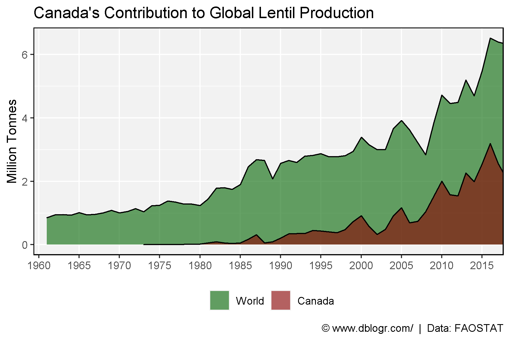
# Prep data
xx <- agData_FAO_Trade %>%
filter(Measurement %in% c("Import Quantity", "Export Quantity"),
Crop == "Lentils", Area %in% c("Canada","India") )
# Plot
mp <- ggplot(xx, aes(x = Year, y = Value / 1000000, group = Measurement,
color = Measurement)) +
geom_line(size = 1.25, alpha = 0.8) +
facet_grid(. ~ Area) +
theme(legend.position = "bottom") +
scale_color_manual(name = NULL, values = c("darkorange", "darkblue")) +
scale_x_continuous(breaks = seq(1965, 2015, by = 10),
minor_breaks = seq(1965, 2015, by = 5)) +
theme_agData() +
labs(title = "Lentil Import/Export", y = "Million Tonnes", x = NULL,
caption = "Data: \xa9 www.dblogr.com/ | FAOSTAT")
ggsave("lentil_07.png", mp, width = 6, height = 4)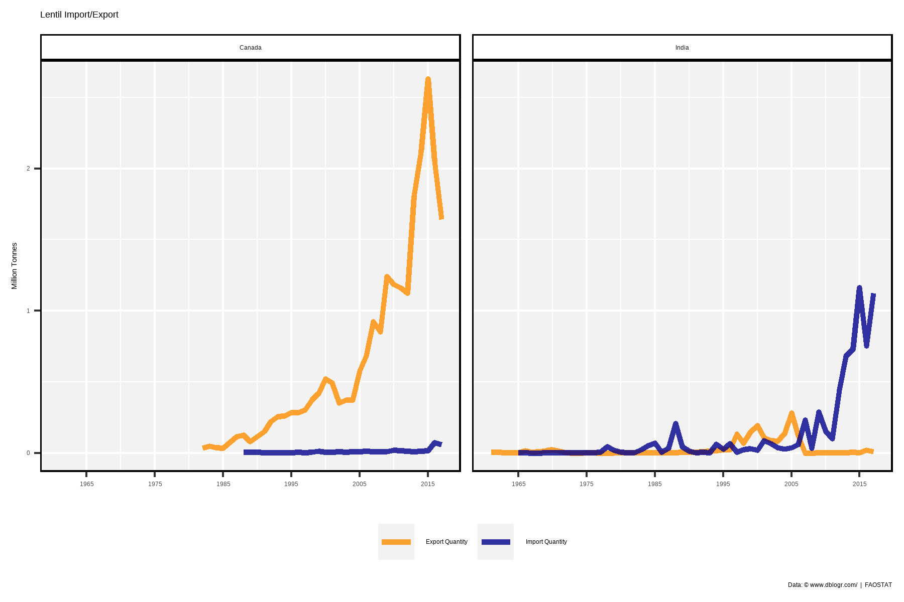
# Prep data
xx <- agData_FAO_Trade %>%
region_Info() %>%
filter(Measurement %in% c("Import Quantity", "Export Quantity"),
Crop == "Lentils", Area %in% agData_FAO_Country_Table$Region)
# Plot
mp <- ggplot(xx, aes(x = Year, y = Value / 1000000, group = Area, color = Area)) +
geom_line(size = 1, alpha = 0.8) +
facet_grid(. ~ Measurement) +
scale_x_continuous(breaks = seq(1965, 2015, by = 10),
minor_breaks = seq(1965, 2015, by = 5)) +
scale_color_manual(name = NULL, values = agData_Colors) +
theme_agData(legend.position = "bottom") +
labs(title = "Lentil Import/Export", y = "Million Tonnes", x = NULL,
caption = "\xa9 www.dblogr.com/ | Data: FAOSTAT")
ggsave("lentil_08.png", mp, width = 6, height = 4)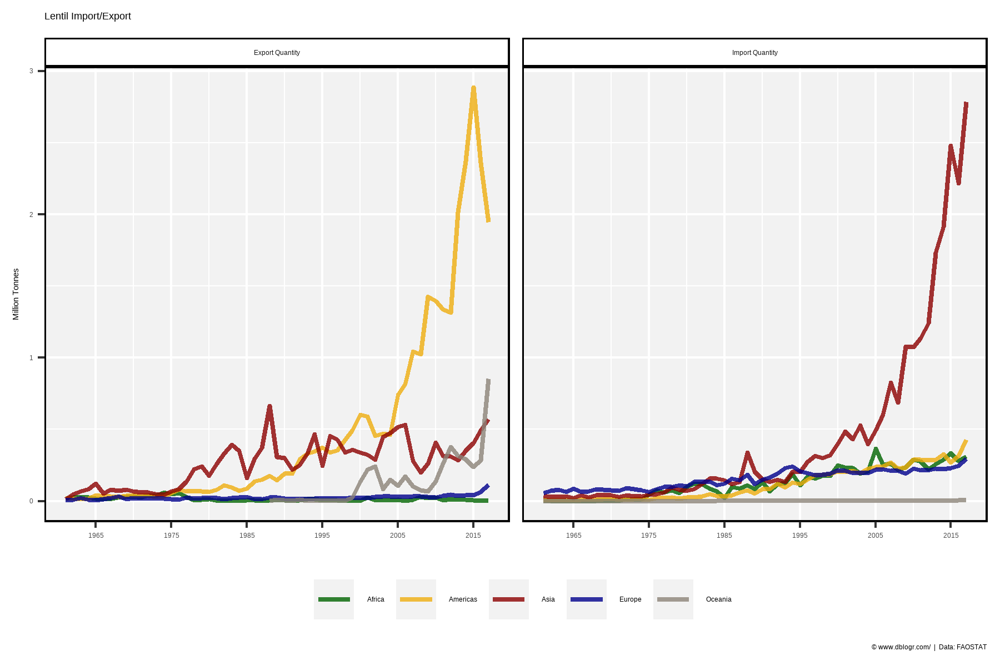
blank_theme <- theme_minimal() +
theme(
axis.title = element_blank(),
axis.ticks.y = element_blank(),
axis.text.y = element_blank(),
panel.border = element_blank(),
panel.grid = element_blank(),
plot.title = element_text(size = 14, face = "bold")
)
# Plot function
ggPie <- function(crop, measurement = "Production", year = 2018, other = 0.01) {
xx <- agData_FAO_Crops %>% region_Info() %>%
filter(Crop == crop, Year == year, Measurement == measurement,
Area %in% agData_FAO_Country_Table$Country)
total <- agData_FAO_Crops %>%
filter(Area == "World", Year == year, Crop == crop,
Measurement == measurement) %>%
pull(Value)
limit <- total * other
x1 <- xx %>% filter(Value > limit) %>% arrange(desc(Value))
areas <- c(as.character(x1$Area), "Other")
x2 <- xx %>% filter(Value < limit) %>%
group_by(Crop, Measurement, Unit, Year) %>%
summarise(Value = sum(Value)) %>% ungroup() %>%
mutate(Area = "Other")
xx <- bind_rows(x2, x1 %>% arrange(Value)) %>%
mutate(Percentage = round(100 * Value / total),
Cummulative_P = cumsum(Percentage),
Label_y = Cummulative_P - (Percentage / 2),
Area = factor(Area, levels = areas),
ISO2 = ifelse(Area == "Other", "", ISO2))
#
ggplot(xx, aes(x = Crop, fill = Area)) +
geom_bar(aes(y = Percentage), stat = "identity", color = "black") +
coord_polar("y", start = 0) +
geom_text(aes(label = Percentage, y = Label_y), color = "white", nudge_x = 0.3) +
blank_theme +
scale_y_continuous(breaks = xx$Label_y, labels = xx$ISO2) +
scale_fill_manual(name = NULL, values = agData_Colors,
labels = rev(paste0(xx$Area," (",xx$Percentage," %)"))) +
labs(title = paste("Lentil |", year),
caption = "\xa9 www.dblogr.com/ | Data: FAOSTAT")
}
#
ggPie_anim <- function(crop, measurement = "Production", other = 0.01) {
xx <- agData_FAO_Crops %>% region_Info() %>%
filter(Crop == crop, Measurement == measurement,
Area %in% agData_FAO_Country_Table$Country)
total <- agData_FAO_Crops %>%
filter(Area == "World", Crop == crop,
Measurement == measurement) %>%
pull(Value) %>% max()
limit <- total * other
x1 <- xx %>% filter(Value > limit) %>% arrange(desc(Value))
areas <- c(as.character(unique(x1$Area)), "Other")
x2 <- xx %>% filter(Value < limit) %>%
group_by(Crop, Measurement, Unit, Year) %>%
summarise(Value = sum(Value)) %>% ungroup() %>%
mutate(Area = "Other")
xx <- bind_rows(x1, x2) %>%
arrange(Value) %>%
mutate(Area = factor(Area, levels = areas),
ISO2 = ifelse(Area == "Other", "", ISO2))
ggplot(xx, aes(x = Crop, fill = Area)) +
geom_bar(aes(y = Value), stat = "identity", color = "black") +
coord_polar("y", start = 0) +
blank_theme +
theme(axis.text = element_blank()) +
#scale_y_continuous(aes(breaks = Label_y, labels = ISO2)) +
scale_fill_manual(values = agData_Colors) +
labs(title = "Lentil - {round(frame_time)}",
caption = "\xa9 www.dblogr.com/ | Data: FAOSTAT") +
# gganimate specific bits
transition_time(Year) +
ease_aes('linear')
}# Plot
mp <- ggPie(crop = "Lentils", measurement = "Production", year = 2018, other = 0.02)
ggsave("lentil_09.png", mp, width = 6, height = 4)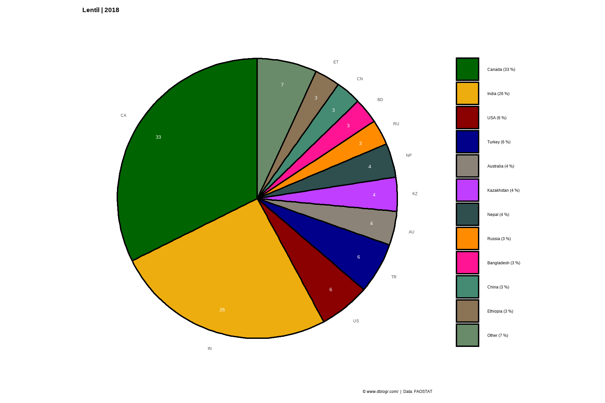
# Plot
mp <- ggPie(crop = "Lentils", measurement = "Production", year = 1961, other = 0.02)
ggsave("lentil_10.png", mp, width = 6, height = 4)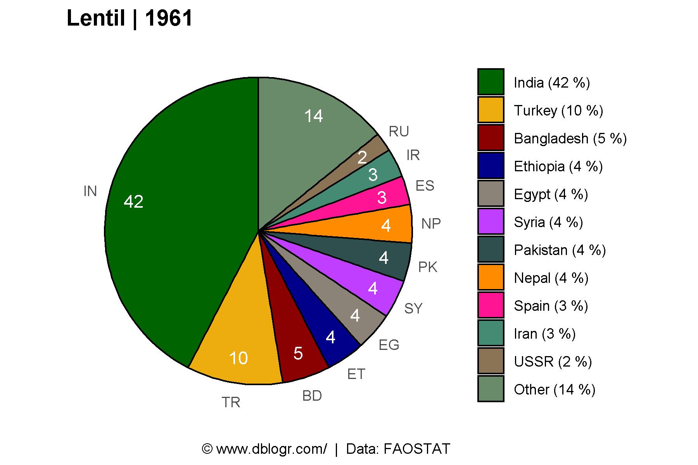
# Plot function
mp <- ggPie_anim(crop = "Lentils")
mp <- animate(mp, end_pause = 20, width = 600, height = 400)
anim_save("lentil_gifs_02.gif", mp)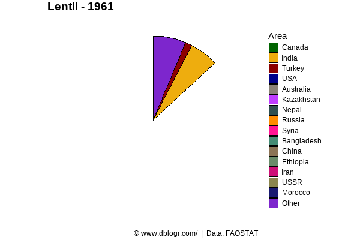
# Prep data
x1 <- agData_FAO_Crops %>%
filter(Crop == "Lentils", Measurement == "Production", Year == 2018,
Area %in% agData_FAO_Country_Table$Country) %>%
top_n(10, Value)
xx <- agData_FAO_Crops %>%
filter(Crop == "Lentils", Measurement == "Production",
Area %in% x1$Area)
colors <- c("lightgrey", "darkgreen")
# Plot
mp <- ggplot(xx, aes(x = Year, y = Area, fill = Value)) +
geom_tile(color = "white", size = 0.35) +
scale_x_continuous(expand = c(0,0)) +
scale_fill_gradientn(colors = colors, na.value = 'white') +
theme_minimal() +
theme(panel.grid = element_blank()) +
coord_cartesian(clip = 'off') +
ylab("") + xlab("") +
theme(legend.position = "bottom", text = element_text(size = 8)) +
labs(caption = "\xa9 www.dblogr.com/ | Data: FAOSTAT")
ggsave("lentil_11.png", mp, width = 6, height = 4)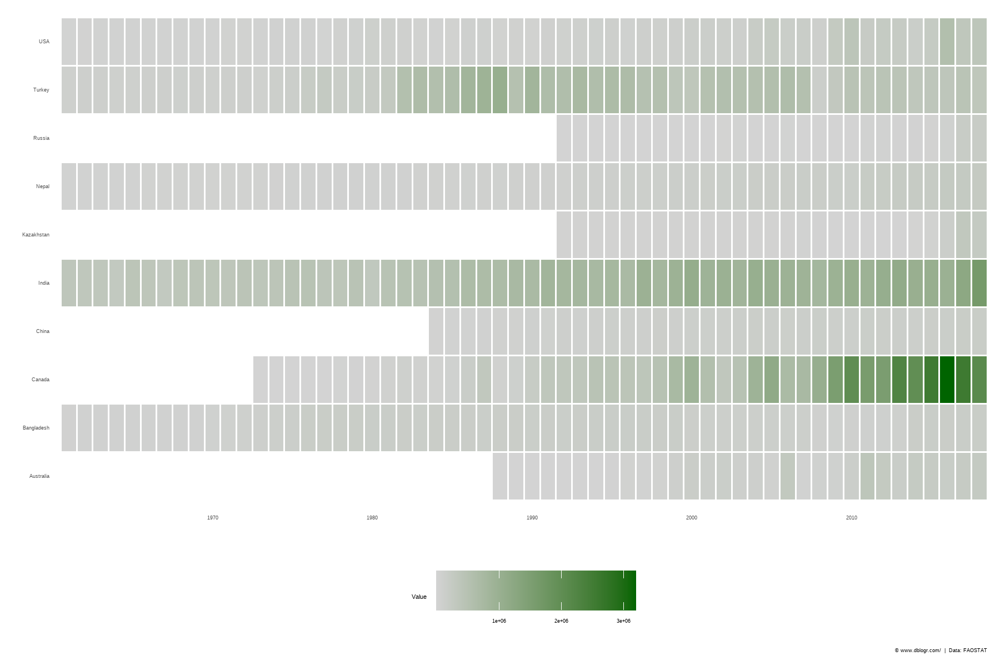
© Derek Michael Wright www.dblogr.com/